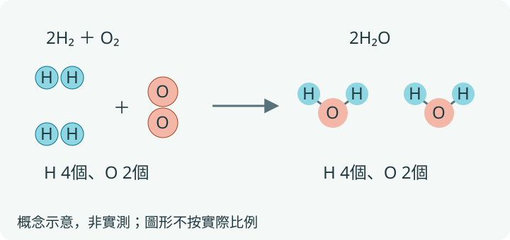
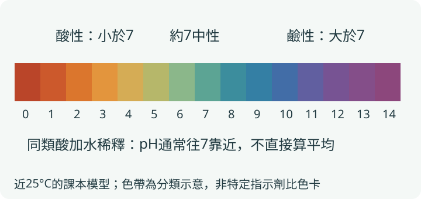
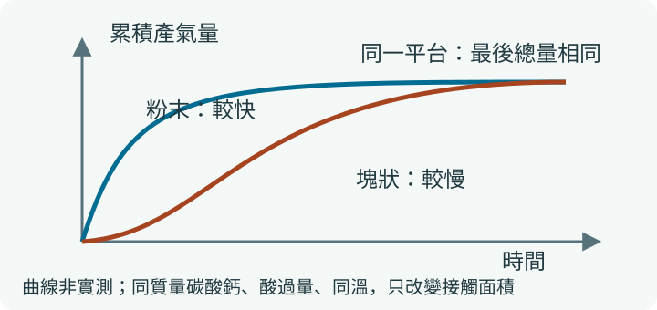
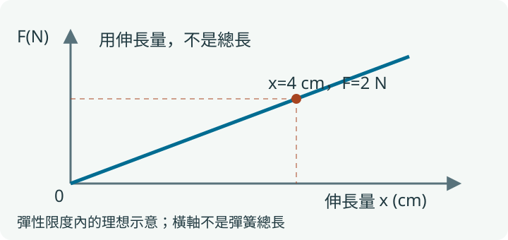
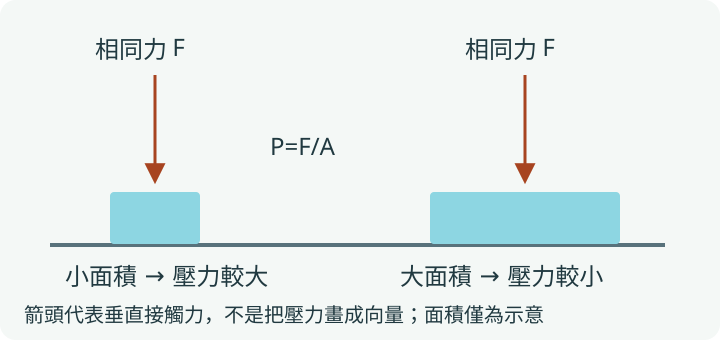
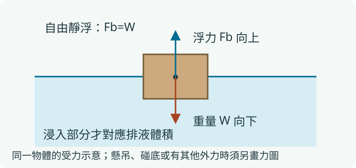

化學反應與相對質量
看見現象 → 確認新物質 → 數原子 → 檢查質量
NATURAL SCIENCE・BOOK 4
這冊用兩條線串起來：化學看『原子如何重排、物質如何改變』；物理看『力如何作用、壓力與浮力如何判讀』。先認清系統和條件，再選守恆、比較或受力圖，不必把每題都變成套公式。
盧老師自然複習・資料核對2026-10-27
網頁版：https://addielu-phy.github.io/ai-coding-tools-free-comparison/science/jhs-science-b4-b2/book4/student/
八年級下學期｜先看全冊，再抓會考核心
看見現象 → 確認新物質 → 數原子 → 檢查質量
追蹤氧去了哪裡，而不是只找有沒有火光
有沒有可移動離子？偏酸還偏鹼？混合後剩下什麼？
快慢看變化過程；平衡看兩方向的變化是否相互抵銷
先看元素與結構，再連到用途、製程與環境影響
先選物體畫力，再分清力、受力面積與排開液體
分類式心智圖：連結表示主題歸屬，不把所有分支當作因果或時間順序。
以108課綱第四學習階段及三版共通內容編排，以下六大主題不是指定出版社的章次。莫耳僅名詞認識，不涉及亞佛加厥數、莫耳數轉換；pH、反應速率與平衡採定性判讀，不加入高中濃度、滴定或平衡常數計算。
| 概念 | 一句話抓重點 | 重點卡 |
|---|---|---|
| 物理變化與化學變化 | 是否產生新物質是核心；冒泡、變色或升溫只是線索，須結合情境。 | 4-01 |
| 質量守恆與系統邊界 | 封閉系統的反應總質量不變；開放容器須追蹤進出氣體。 | 4-01 |
| 原子量、分子量與式量 | 以相對質量比較粒子，依化學式將各原子的相對質量加總。 | 4-02 |
| 化學反應式與係數 | 用係數調整粒子數量比，不可任改化學式下標以求平衡。 | 4-01 |
| 簡單質量比例與反應熱 | 由粒子比與相對質量判斷反應量；反應也可能吸熱或放熱。 | 4-02 |
| 莫耳的範圍界線 | 認識這個粒子計量名詞即可；108國中不要求莫耳與粒子數換算。 | 4-02 |
| 燃燒與緩慢氧化 | 燃燒是快速氧化的常見例；生鏽等氧化不一定產生火光。 | 4-03 |
| 元素對氧的活性 | 相同適當條件下，比較物質與氧結合的難易；不要忽略表面狀態。 | 4-03 |
| 狹義氧化還原 | 本冊以得氧為氧化、失氧為還原；同一過程中追蹤氧的轉移。 | 4-03 |
| 防鏽與金屬冶煉 | 隔絕水氧可防蝕；將金屬氧化物中的氧移走，是還原的應用。 | 4-03 |
| 電解質與非電解質 | 比較食鹽水與糖水的導電性；導電不等於一定是酸。 | 4-04 |
| 離子、解離與根離子 | 水溶液以可移動的陰陽離子傳遞電荷；不要誤畫成只有電子流。 | 4-04 |
| 常見酸鹼與反應 | 酸可與特定金屬或碳酸鹽反應；由氣體與現象辨識條件。 | 4-05 |
| 指示劑與pH | 常溫入門模型以7為中性，小於7偏酸，大於7偏鹼；不作對數計算。 | 4-05 |
| 中和與放熱 | 常見酸與鹼反應可生成鹽和水；等體積不保證恰好中和。 | 4-05 |
| 鹽類與生活應用 | 鹽是化合物類別，不等於只有食鹽；鹽溶液不一定中性。 | 4-05 |
| 化學品安全與濃度標示 | 讀懂百分濃度或ppm的意義；不品嚐、不混用清潔劑，不加高中滴定計算。 | 4-05 |
| 速率與曲線判讀 | 比較相同時間的變化量或完成先後，不把反應快慢當成最終產量。 | 4-06 |
| 影響反應快慢的條件 | 本性、溫度、濃度、接觸面積與催化劑；比較時控制其餘條件。 | 4-06 |
| 可逆反應與動態平衡 | 平衡時正逆反應仍持續，兩方向速率相等，不要求兩邊存量相等。 | 4-06 |
| 平衡條件的改變 | 依題目提供的反應資訊判讀溫度或濃度改變，不死背一律向右。 | 4-06 |
| 有機與無機化合物 | 有機物通常是碳化合物，但CO、CO₂與碳酸鹽等慣例歸為無機。 | 4-07 |
| 烴類與化石燃料 | 烴僅含碳與氫；認識甲烷、丙烷、丁烷及燃料使用風險。 | 4-07 |
| 醇、有機酸與酯 | 由常見物質連到用途；同分子式也可能因原子排列不同而性質不同。 | 4-07 |
| 酯化、皂化與清潔作用 | 醇與有機酸可生成酯；油脂與強鹼皂化可得肥皂與甘油。 | 4-07 |
| 肥皂與合成清潔劑 | 硬水中的鈣鎂離子可使肥皂形成沉澱；合成不等於一律不能分解。 | 4-07 |
| 聚合物、食物與衣料纖維 | 區分小分子與聚合物、天然與合成、熱塑與熱固，不靠名稱猜全部性質。 | 4-07 |
| 碳足跡、減塑與5R | 從生命週期看環境負荷；認識減量、拒絕、重複使用、回收及再生。 | 4-07 |
| 力的效應、單位與測量 | 力可改變運動或形狀；質量用kg，力用N，不把兩者混為一談。 | 4-08 |
| 彈簧與力的平衡 | 彈性限度內看伸長量；同物體所受合力為零，才談力的平衡。 | 4-08 |
| 靜摩擦與動摩擦 | 靜摩擦依需求調整至上限；方向反對接觸面的相對滑動或趨勢。 | 4-08 |
| 壓力與接觸面積 | 壓力P=垂直作用力F／面積A；同一力壓在小面積上，壓力較大。 | 4-09 |
| 液體壓力 | 靜止同種液體同深度壓力相同，與容器形狀或總水量不能直接畫等號。 | 4-09 |
| 大氣壓力與氣體體積 | 空氣也有壓力；定溫定量氣體受壓縮時壓力增大，以定性比較為主。 | 4-09 |
| 阿基米德原理與浮沉 | 浮力等於排開液體的重量；浮在液面靜止時，浮力才與物重平衡。 | 4-10 |
| 帕斯卡原理與液壓應用 | 封閉液體所加的壓力變化可傳遞；面積不同時，力可不同，別把壓力與力混為一談。 | 4-09 |
題數多的先練，前置觀念仍要補；重要性不只由題數決定。
111–115年每年自然科50題，共250題；本頁按作答核心每題只計一個主題，並排除6題冊次／定義邊界案例。這是本站主題觀察，非官方冊次權重；環境能源含跨冊議題，主題寬窄也不同。0例不代表不考，次數不是下一次命題機率。詳見來源頁的題號與編碼。
查看各年題號、排除規則與官方試卷 →這是依前置知識安排的學習順序，與上方歷年題數排序不同，不是必考保證。
學習目標：能先選系統，再用原子個數檢查反應式。
| 情境 | 先看哪裡 | 容易誤判 |
|---|---|---|
| 密閉袋內產氣 | 氣體仍在系統內，總質量不變 | 產生氣體就一定變輕 |
| 開口燒杯產氣逸散 | 秤上的系統少了逸散部分 | 質量守恆失效 |
| 鎂在空氣中燃燒 | 生成物包含原來空氣中的氧 | 金屬憑空變重 |

下列為本次自編練習，不是歷屆原題；情境數值為題設或示意，非實測。
學習目標：能由化學式算相對質量，並以給定反應比例解題。
| 看見的數字 | 代表什麼 | 不能當成什麼 |
|---|---|---|
| H₂O的2 | 每個水分子含2個氫原子 | 兩個水分子 |
| 2H₂O前的2 | 兩份水分子的模型 | 每份水含4個氫 |
| H₂O相對分子量18 | 2×1+16的相對質量 | 一顆水重18 g |
下列為本次自編練習，不是歷屆原題；情境數值為題設或示意，非實測。
學習目標：能以本冊狹義定義辨認誰得氧、誰失氧。
| 過程 | 氧的變化 | 判讀 |
|---|---|---|
| 鎂變成氧化鎂 | 鎂得到氧 | 鎂被氧化 |
| 氧化銅變成銅 | 氧化銅失去氧 | 氧化銅被還原 |
| 鐵表面緩慢鏽蝕 | 與氧等環境條件作用 | 無火光仍可有氧化 |
下列為本次自編練習，不是歷屆原題；情境數值為題設或示意，非實測。
學習目標：能用可移動離子解釋電解質水溶液的導電。
| 樣品 | 主要粒子狀態 | 一般課堂導電判讀 |
|---|---|---|
| 固態食鹽 | 離子固定於晶體中 | 不易導電 |
| 食鹽水 | 可移動Na⁺、Cl⁻ | 可導電 |
| 糖水 | 以中性糖分子分散 | 不易導電 |
| 純水 | 可移動離子極少 | 一般裝置不易測到導電 |
下列為本次自編練習，不是歷屆原題；情境數值為題設或示意，非實測。
學習目標：能判讀酸鹼指示結果，不把等體積當成完全中和。
| 判讀工具／情況 | 可以知道 | 不能直接保證 |
|---|---|---|
| pH值 | 酸鹼性的比較 | 僅由名字判定濃度 |
| 石蕊試紙 | 酸使藍石蕊變紅，鹼使紅石蕊變藍 | 中性會把紅藍石蕊都變紫 |
| 酚酞 | 常見課堂情況下鹼性呈紅色，酸／中性無色 | 無色就一定是酸 |
| 酸鹼各取相同體積 | 知道取用體積相同 | 一定恰好中和 |

下列為本次自編練習，不是歷屆原題；情境數值為題設或示意，非實測。
學習目標：能分辨速率、最終產量與平衡狀態。
| 比較概念 | 看什麼 | 不代表什麼 |
|---|---|---|
| 反應快慢 | 相同時間的變化或完成先後 | 最終一定生成更多 |
| 最終產量 | 反應物供應及反應條件 | 過程一定比較快 |
| 動態平衡 | 正逆方向的變化相互抵銷 | 反應停止或兩邊量相等 |
| 催化劑 | 改變達成同一平衡的快慢 | 固定條件下把平衡永久推向一側 |

下列為本次自編練習，不是歷屆原題；情境數值為題設或示意，非實測。
| 時間（秒，示意） | 粉末累積產氣量（mL） | 整塊累積產氣量（mL） |
|---|---|---|
| 0 | 0 | 0 |
| 2 | 12 | 5 |
| 6 | 20 | 14 |
| 12 | 20 | 20 |
自編情境數據，非實測。兩組只改顆粒大小，其他條件如題幹；比較快慢，不要求計算速率。
學習目標：能用元素、結構或用途比較常見有機物與材料。
| 類別／過程 | 抓一個關鍵 | 生活連結 |
|---|---|---|
| 烴 | 只含C、H | 甲烷、丙烷、丁烷等燃料 |
| 醇／有機酸／酯 | 結構與性質不同 | 乙醇、乙酸、乙酸乙酯 |
| 酯化／皂化 | 不是同一種反應的名稱互換 | 醇酸生成酯；油脂與強鹼製皂 |
| 肥皂／合成清潔劑 | 硬水與可分解性要各別判斷 | 肥皂可與鈣鎂離子成沉澱 |
| 熱塑／熱固材料 | 能否受熱軟化再成形 | 不等於所有塑膠都可反覆回收 |
| 食物／衣料纖維 | 成分與結構決定用途 | 澱粉、蛋白質、棉、羊毛、聚酯 |
| 結構／製程線索 | 怎麼分辨 | 不要混用 |
|---|---|---|
| 烴：只有C、H | 含O等其他元素就不是烴 | 有機物不等於全部都是烴 |
| 醇的–OH／有機酸的–COOH | 看–OH所在位置；羧基中的–OH不直接當醇 | 不能只看到OH就說是醇 |
| 相同分子式、不同排列 | 例如乙醇與甲醚同為C₂H₆O但性質不同 | 元素個數相同不代表是同一物質 |
| 萃取／酯化 | 萃取利用溶解性分離；酯化生成新物質 | 把物理分離與化學合成混同 |
| 製皂後加食鹽 | 使肥皂較易析出、利於分離 | 食鹽不是取代強鹼進行皂化 |
下列為本次自編練習，不是歷屆原題；情境數值為題設或示意，非實測。
學習目標：能畫同一物體的力，並用伸長量與靜止條件判讀。
| 容易混淆的一對 | 應分開的地方 | 判讀提醒 |
|---|---|---|
| 質量／重量 | 質量是物體性質，重量是受力 | 題目若採g=10 N/kg就一致使用 |
| 總長／伸長量 | 伸長量=受力後長度−原長 | 圖的原點要看清 |
| 靜摩擦／最大靜摩擦 | 靜摩擦不一定已達上限 | 靜止時先看需平衡的水平力 |
| 同物體平衡力／不同物體交互作用 | 不能放在同一張受力圖任意相消 | 先問每個箭頭作用在誰 |

下列為本次自編練習，不是歷屆原題；情境數值為題設或示意，非實測。
學習目標：能計算接觸壓力，並定性比較液體與氣體壓力。
| 比較情境 | 保持哪些條件 | 可判斷什麼 |
|---|---|---|
| 接觸面積變小 | 垂直作用力相同 | 接觸壓力增大 |
| 液體位置更深 | 同種靜止液體、同液面外壓 | 液體造成的壓力增大 |
| 不同容器同深度 | 同液體、同液面外壓 | 壓力不因形狀不同就必定不同 |
| 密閉氣體壓縮 | 氣體量與溫度固定 | 體積小時壓力較大，作定性比較 |

下列為本次自編練習，不是歷屆原題；情境數值為題設或示意，非實測。
學習目標：能用排液重量與受力平衡解釋浮沉與讀秤。
| 狀態／改變 | 可用的關係 | 常見陷阱 |
|---|---|---|
| 浮在液面靜止 | 浮力=物重 | 把整個物體體積都當排液體積 |
| 物體完全浸沒 | 排液體積=物體體積 | 深度大就必然浮力大 |
| 同物體改浮較密液體 | 浮力仍等於同一物重，浸沒體積較小 | 液體越密，浮著時浮力一定較大 |
| 物體停在容器底部 | 須加入底部支持力等條件 | 不管其他力都寫浮力=重量 |

下列為本次自編練習，不是歷屆原題；情境數值為題設或示意，非實測。
若仍錯，先回到對應比較表，不把「看過解析」當作「自己會解」。
教育部自然科學領域課綱：Aa-IV-2、Ja-IV、Jb-IV、Jc-IV、Jd-IV、Je-IV、Jf-IV與相關力學內容；細部限制見本網站來源頁。
課綱、會考官方內容與111–115題目來源均列於來源頁。各版選讀、實驗與校內段考進度仍須對照現用教材；這是共通概念整理，非逐頁課本替代。